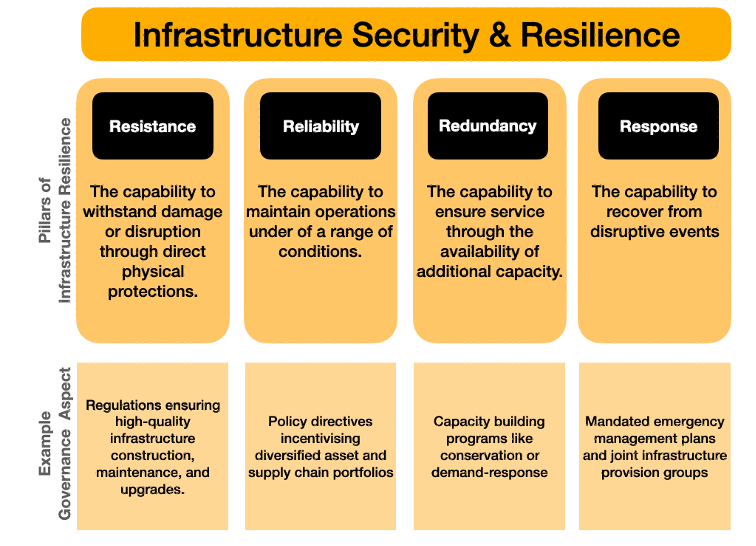
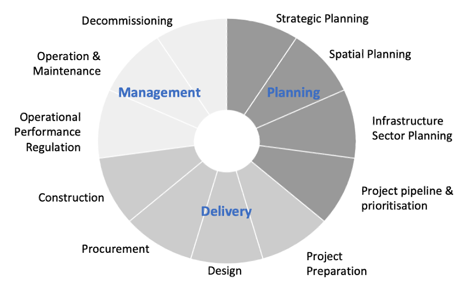
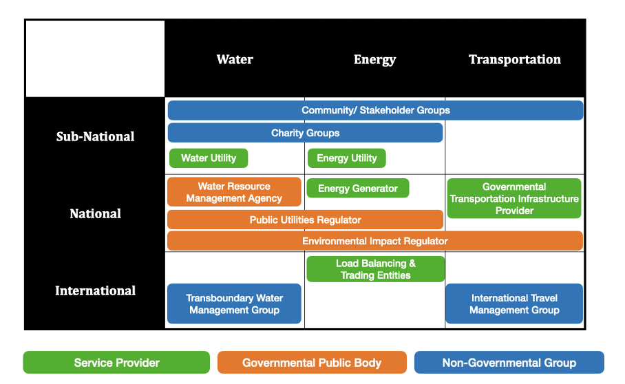

This lecture introduces the ideas of resilience management for infrastructure, the key timelines for asset management, and the differences in objectives and alignment of multi-level stakeholders.
Infrastructure governance describes the set of actions, frameworks, and arrangements that define the interactions and operational procedures within and between organisations, in providing infrastructure services (Heinimann and Hatfield 2017). Traditionally, the term referred only to the planning, financing, contracting, and building of infrastructure (Wegrich, Kostka, and Hammerschmid 2017). However, within the last decade, this definition has expanded to recognise the critical role of the intangible factors of governance which include coordination, regulation, decision-making, policies, and programmes. While exact definitions vary widely to suit their unique national, sectoral, and community contexts, the term is now generally understood to encompass both the political and strategic management of assets in addition to their physical components.
Effective governance of public infrastructure investments is linked to national growth and enhanced infrastructure services for customers (OECD 2013). Indeed, ensuring a sustained and safe service to customers is infrastructure’s core goal but in recent years this has often been expanded upon to encompass multiple objectives that are relevant to the public consciousness. Examples of this are governance strategies which include goals for: environmental sustainability, socially equitable service and access, data transparency, and stakeholder engagement. Without infrastructure governance that is beholden to its users and stakeholders, infrastructure projects become vulnerable to corruption, mismanagement, cost overruns, and development inefficiencies (OECD 2017; Flyvbjerg, Skamris Holm, and Buhl 2004).
In this lecture we will briefly introduce three of the fundamental considerations in understanding and implementing effective infrastructure governance for resilience:
Resilience is the ability of infrastructure to “resist, absorb, recover from or successfully adapt to adversity or change in conditions” (FEMA 2012). Resiliency can take the form of both physical and governance resilience, where the former refers to assets withstanding acute material hazards like earthquakes, floods, and landslides, while the latter refers to the durability of critical management systems and programmes which enable resilience. Four key concepts underpin and support infrastructure system resilience thinking: resistance, reliability, redundancy, and response. Each of these encompass both physical and governance resilience aspects (Figure 19.1.1).

Figure 19.1.1: The four pillars of infrastructure resilience showing an example of governance actions that support each. Adapted from Cabinet Office (2018).
Across these pillars of infrastructure resilience, governance plays a key role in ensuring ongoing and evolving standards, management, and programmes, which are critical as new infrastructure challenges arise in the face of climate change.
Governance actions to build resilience will be context-specific, based on policy, regulations, assets, and importantly, the customers of that infrastructure system. An example of this in the energy-sector is automated demand response (ADR) programmes which use economic incentives to encourage customers to shift their energy use. These programmes are widely recognised to provide redundant capacity to the energy grid; however, they require customer engagement, technological expertise, and stable and automated revenue recovery systems. In contexts without savvy customers, ADR programmes (such as effective metering) are not implementable, and thus more targeted governance strategies are required.
Infrastructure assets typically have expected useful lifetimes of 30-100 years (depending on the sector and asset), though we’ve seen that many are utilised far past that point, as a matter of need. Despite their variable lifetimes, all assets undergo a similar lifecycle from the perspective of management and governance, and lifecycles are often distinguished into: infrastructure planning, asset delivery, and service management components (Figure 19.1.2).

Figure 19.1.2: A typical infrastructure management timeline broken down into the planning, delivery, and management phases, as well as sub-phases within (UNOPS 2018)
Across each of these phases, the governance actions and actors vary and the incentives and goals of those pursuing the infrastructure project shift. As such, it is imperative to understand which phase of the infrastructure lifecycle an asset is in and which governance actors are most relevant to that phase.
In the planning phase, assets and benefits are conceptualised and there is an emphasis on the governance around zoning for siting facilities, as well as securing financing for the project. This latter finance component commonly includes borrowing and lending policies and legal protections for private investments. In the asset delivery phase, projects face physical construction challenges, and governance most prominently takes the form of: 1) design and construction standards, and 2) transparency and procurement regulations. Both of these work to ensure the asset’s quality while protecting workers physically and customers monetarily. Lastly, in the management phase, while the infrastructure is focused on service delivery, governance is most relevant in monitoring and reporting regulations, maintenance standards, and environmental impacts.
Within even a single infrastructure sector, there are stakeholders acting across different levels of infrastructure services, commonly distinguished at the sub-national, national, and international levels (Lovell, Watson, and Hiteva 2018). Actors with similar goals across each of these engage in unique strategies to achieve outcomes, but this can lead to conflict requiring skilful governance and management to remedy. Heinimann and Hatfield (2017) suggests that the new tools of governance are negotiation, dialogue, deliberation, and consensus, and through these, effective governance, policies, and programmes can realign stakeholders to minimise conflict and achieve mutually desirable outcomes.
Consider, for example, a community-led water conservation group, a water utility, and a national water resource planning agency, all with the identical goal of ensuring long-term water security. While the conservation group might advocate for this through the use of efficient water fixtures, the utility might see conservation as a reduction in purchased supply and thus revenue—a critical loss for long-term sustained service. Similarly, the national planning agency may enshrine a policy pushing for new water companies and supplies like desalinated water—a strategy incompatible with both of the former actors’ goals. Effective governance in this scenario could take any number of shapes dependent on other contextual factors, but it will almost certainly utilise the tools described by Heinimann and Hatfield (2017).
This example is not unique to the water sector but demonstrates the need for careful planning and policy implementation that considers actors from multiple levels within infrastructure service provision. Figure 19.1.3 below shows a framework similarly identifying multi-level actors across the energy and transportation sectors.

Figure 19.1.3: A generalised framework for mapping infrastructure actors impacting governance at the sub-national, national, and international levels, showing simplified examples of key actors across different infrastructure sectors. Adapted from Lovell, Watson, and Hiteva (2018).
In this lecture, we learned that the term infrastructure governance is broadly applied to mean the management, planning, financing, contracting, building, and service provision of infrastructure systems, as well as the coordination, regulation, decision-making, policies, and programmes that support them. The value of effective governance is unquestioned and has been demonstrated in terms of increased national growth and foreign investment, but also through lessened inefficiencies, corruption, and cost overruns.
In building resilience in infrastructure, four key components are often considered, the four ’R’s: resistance, reliability, redundancy, and response. Across each of these, active governance —both before (resistance, reliability, redundancy) and after (response) a hazard or disruption—plays an important role in ensuring continued service to customers.
The timing and lifecycle of the infrastructure assets is also important to consider in its management, as the relevant organisations and stakeholders shift at different phases of the project. Frameworks that examine lifecycles are commonly distinguished into planning, delivery, and management phases. The importance of the planning phase is rarely overstated as governance begins far in advance of assets being built.
The last key component of infrastructure governance is effective management across different levels. Subnational, national, and international stakeholders have different perspectives, goals, and timelines to be considered when establishing projects and especially long-term policies. Without this coordination and the effective alignment of incentives, actors may unknowingly work to the detriment of others.
Altogether, understanding these key dimensions of infrastructure governance should equip you to begin assessing infrastructure systems and identifying opportunities to achieve more effective outcomes.